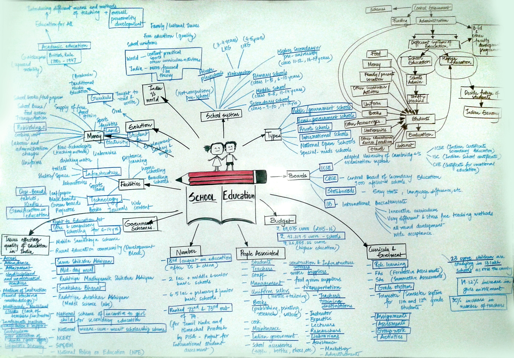
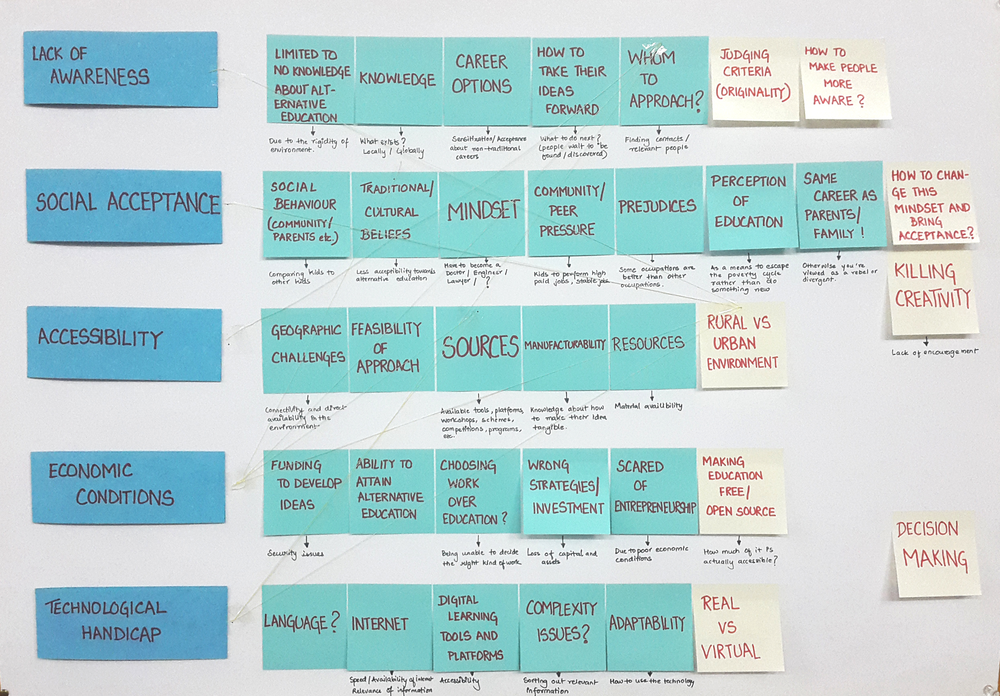

How did it all start?
WICKED PROBLEMS
Our system design journey started by identifying and mapping out problems that are highly common yet, complexity is written in their very nature. Problems that haunt humanity and challenge its very existence on a daily basis and solutions to which are far from simple. Thus, the very initial stage was to map out a large number of wicked problems and then select the wickedest of them all.
MOVING ON TO STARTUPS
From the list of the most wicked problems, we decided to cater to one of the most demanding and
painful truths of the striving young population of India, that is unemployment.
Hence, we decided to study startups, the trending element that plays a vital role in increasing the
employment rate and the economy of the nation, combined with people’s interests and dreams.
Understanding the startup ecosystem

I led the design project with a focus on simplifying the existing information architecture, the navigation, and restructure service layers of all the interactions with IMAX program and offer business stickiness with their customers.
As a service designer I collaborated with multiple stakeholders, conducted various co-creation workshops to build the qualitative understanding of the service and its customers and end users, plan and design to create the best possible service experience for service delivery and maintenance.

Insights and Design directions from startup ecosystem
- ‘Startup India Standup India’ initiative has shifted the focus in the Indian landscape towards startups and the society is gradually accepting startups as a good career option.However, a large section of the society still remains that views having a stable job as a more preferable career option.
- A lot of startups have emerged in the past 10 years that are contributing towards the development of the nation and an accelerated growth of the GDP. These startups are also interdependent and help each other.
- A lot of funding options have also emerged, both at a government and private level. However, there is still a major awareness issue about the various schemes, initiatives, policies and platforms as well as incubators and mentoring.
- Thus, lack of awareness, social acceptance, funding, prototyping, marketing and the fear of failure are the major areas that pose problems for startups in India currently.
Moving on to Education- Why Education?
The first and the foremost issue that restricts the nation is lack of social acceptance and social restriction towards career options such as choosing only from a few options or taking forward their family business. Secondly, due to the varying societal structures a large part of the society is still unaware and does not avail of major benefits that the government or other private sectors are trying to provide.
The only way to tackle this is at an educational level, by increasing exposure of the children as well as the parents. By providing exposure and the required understanding at school level, the child will not only be able to come up with innovative ideas but also gain knowledge to take it forward on their own in the desired direction, thus, becoming a successful entrepreneur. Hence, we moved on to look into the existing education system, how innovation and entrepreneurial skills are already imparted to the kids and how it can be improved and enhanced.
Understanding the current Education system in India

We mapped out the current education system in India to identify the various features and shortcomings that exist throughout from primary to high school education. Our major learning was that apart from the traditional methods of education, a few Indian schools are following experiential and alternative educational methods as well for overall improved development of the child and design thinking is slowly trickling down to the school education level.
Many government schemes and policies exist to improve the scenario of education in India. However, there is still a negligence at the implementation level and the major challenge still remains to not just educate the children but provide them with the right qualities and attributes to be successful in life in whichever field that they choose.
Looking at alternative forms of education
We started by understanding what alternative and experiential education is all about, followed by a lot of case studies of various schools and organisations that are endeavouring to practice and propagate these forms in India and the rest of the world.

Design thinking in schools - major learnings
- Students should be able to tackle real problems and come up with possible solutions for those in the form of various projects to increase overall understanding in the different fields and be ready for real world challenges.
- Designing something or solving a problem to help someone else not only improves their confidence but also makes them realise that they can be leaders and affect somebody else’s life by hearing out their needs and providing them with solutions.
- It gives students a sense of ownership of their ideas and environment and the realisation that they can actually do something to bring about a change in their society and environment.
Mapping insights

After a detailed understanding of the education system and various forms and platforms for education, we mapped the various elements of alternative and experiential education as well as the practice of design thinking in schools that affect entrepreneurship skills.
Most of the qualities and learnings that these forms of education provide help in the development of problem solving abilities, leadership skills, spirit of teamwork and thus, the overall development of the student, imbibing entrepreneurial skills.
The only missing element is guidance regarding business model development and skills specific to setting up a startup.
We also mapped the challenges and issues in the existing education system in combination with the society that restricts students from becoming entrepreneurs.
We majorly divided the issues into 5 categories - lack of awareness, social acceptance, accessibility, economic conditions and technological handicap. While looking into education we realised how closely it was linked with the mindset of the society. Thus, changing the education system is a slow process that can only change as the mindset of the society improves.

Major insights and design directions

Arriving at teenage entrepreneurship
“Its been said that the best time to plant a tree was 20 years ago. The second best time is now.” Many entrepreneurs say they wished they had started on their path sooner.
WHY TEENAGE ENTREPRENEURSHIP?
Teenagers, i.e, the current generation of students in school are the future changemakers and contributors towards the economy of the country.
After studying the startup ecosystem, the maker movement and the current education system in India the major learning was that to improve the output, quality and quantity of startups in the country, the problem should be tackled at the basic level and there should be a change in the school education system.
A shift is required in school education from the traditional method of rote learning towards practical hands on activities and problem solving.
Teenagers should have more exposure towards solving real world problems by different modes of idea generation and prototyping right from school along with certain exposure to entrepreneurial skills so that they can take their ideas forward in whichever direction they want in the future.
Thus, the aim of this project is to identify all possible opportunity areas that can be tackled to provide teenagers with the required skillset and putting a system in place that would enable them to not only come up with ideas, but prototype them and successfully launch a startup or a business of their own if and when they want, thus, retaining the sense of ownership.
Understanding teenage entrepreneurship

We mapped out the various aspects of teenage entrepreneurship to inculcate a greater understanding of the topic and see what is happening in India and abroad to empower teenagers and also learn from the existing success stories.
Teenage entrepreneurship is not just about telling teenagers how to start their own startup but about imbibing in them various qualities required for overall development from an early stage as an accumulation of various parameters, thus, making them strong and able citizens of the future who can bring about change.
Stakeholder mapping

We then mapped out the various stakeholders that would be a part of teenage entrepreneurship. This was a combination of people involved with education as well as people involved with startups and makerspaces.
Thus, the stakeholders are people involved at each stage of idea generation (school level), to prototyping (makerspaces and online open source platforms), business model development to funding and marketing.
Field visits and interviews

We went to various schools - (Diwan Ballubhai School, Riverside School and MGIS), maker spaces (FABLAB at CEPT) and places that promote entrepreneurship (NIF, IIM, NDBI - NID)as a part of our primary research.
Workshop workflow

After substantial amount of primary research and visits various places we decided to conduct co creation workshops with teenagers at various schools to see how the students respond to the idea of entrepreneurship.
We also required to see their level of understanding towards entrepreneurship, coming up with ideas and the development of business models, which would further help us in identifying our opportunity areas and coming up with solutions.

Detailing out the opportunities

Opportunity classification

After classifying the various opportunities in different categories and detailing them out we made opportunity cards that can be plugged into our system model at various levels.
The opportunity cards are a deck of cards describing each of the opportunities organised within six parameters namely, enable, sensitise, showcase, collaborate, network and proposal.
Proposed system

Introducing startup from scratch